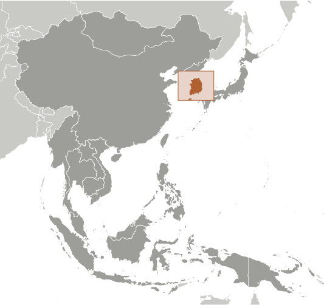
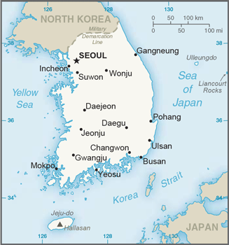
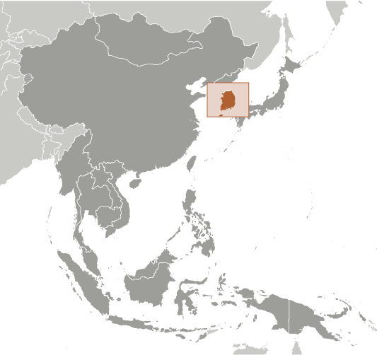
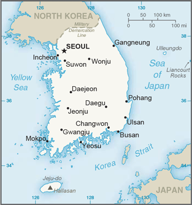

East & Southeast Asia :: KOREA, SOUTH
Introduction :: KOREA, SOUTH
-
An independent kingdom for much of its long history, Korea was occupied by Japan beginning in 1905 following the Russo-Japanese War. In 1910, Tokyo formally annexed the entire Peninsula. Korea regained its independence following Japan's surrender to the US in 1945. After World War II, a democratic-based government (Republic of Korea, ROK) was set up in the southern half of the Korean Peninsula while a communist-style government was installed in the north (Democratic People's Republic of Korea, DPRK). During the Korean War (1950-53), US troops and UN forces fought alongside ROK soldiers to defend South Korea from a DPRK invasion supported by China and the Soviet Union. A 1953 armistice split the Peninsula along a demilitarized zone at about the 38th parallel. PARK Chung-hee took over leadership of the country in a 1961 coup. During his regime, from 1961 to 1979, South Korea achieved rapid economic growth, with per capita income rising to roughly 17 times the level of North Korea.South Korea held its first free presidential election under a revised democratic constitution in 1987, with former ROK Army general ROH Tae-woo winning a close race. In 1993, KIM Young-sam (1993-98) became the first civilian president of South Korea's new democratic era. President KIM Dae-jung (1998-2003) won the Nobel Peace Prize in 2000 for his contributions to South Korean democracy and his "Sunshine" policy of engagement with North Korea. President PARK Geun-hye, daughter of former ROK President PARK Chung-hee, took office in February 2013 as South Korea's first female leader. In December 2016, the National Assembly passed an impeachment motion against President PARK over her alleged involvement in a corruption and influence-peddling scandal, immediately suspending her presidential authorities and establishing Prime Minister HWANG Kyo-ahn as Acting President. The impeachment was upheld in March 2017, triggering an early presidential election on 9 May 2017. South Korea will host the 2018 Winter Olympic Games. Discord with North Korea has permeated inter-Korean relations for much of the past decade, highlighted by the North's attacks on a South Korean ship and island in 2010, the exchange of artillery fire across the DMZ, and multiple nuclear and missile tests in 2016, and missile tests in 2017.
Geography :: KOREA, SOUTH
-
Eastern Asia, southern half of the Korean Peninsula bordering the Sea of Japan and the Yellow Sea37 00 N, 127 30 EAsiatotal: 99,720 sq kmland: 96,920 sq kmwater: 2,800 sq kmcountry comparison to the world: 110slightly smaller than Pennsylvania; slightly larger than Indianatotal: 237 kmborder countries (1): North Korea 237 km2,413 kmterritorial sea: 12 nm; between 3 nm and 12 nm in the Korea Straitcontiguous zone: 24 nmexclusive economic zone: 200 nmcontinental shelf: not specifiedtemperate, with rainfall heavier in summer than winter; cold wintersmostly hills and mountains; wide coastal plains in west and southmean elevation: 282 melevation extremes: lowest point: Sea of Japan 0 mhighest point: Halla-san 1,950 mcoal, tungsten, graphite, molybdenum, lead, hydropower potentialagricultural land: 18.1%arable land 15.3%; permanent crops 2.2%; permanent pasture 0.6%forest: 63.9%other: 18% (2011 est.)7,780 sq km (2012)with approximately 70% of the country considered mountainous, the country's population is primarily concentrated in the lowland areas, where density is quite high; Gyeonggi Province in the northwest, which surrounds the capital of Seoul and contains the port of Incheon, is the most densely populated province; Gangwon in the northeast is the least populatedoccasional typhoons bring high winds and floods; low-level seismic activity common in southwestvolcanism: Halla (1,950 m) is considered historically active although it has not erupted in many centuriesair pollution in large cities; acid rain; water pollution from the discharge of sewage and industrial effluents; drift net fishingparty to: Antarctic-Environmental Protocol, Antarctic-Marine Living Resources, Antarctic Treaty, Biodiversity, Climate Change, Climate Change-Kyoto Protocol, Desertification, Endangered Species, Environmental Modification, Hazardous Wastes, Law of the Sea, Marine Dumping, Ozone Layer Protection, Ship Pollution, Tropical Timber 83, Tropical Timber 94, Wetlands, Whalingsigned, but not ratified: none of the selected agreementsstrategic location on Korea Strait; about 3,000 mostly small and uninhabited islands lie off the western and southern coasts
People and Society :: KOREA, SOUTH
-
51,181,299 (July 2017 est.)country comparison to the world: 27noun: Korean(s)adjective: KoreanhomogeneousKorean, English (widely taught in junior high and high school)Protestant 19.7%, Buddhist 15.5%, Catholic 7.9%, none 56.9% (2015 est.)0-14 years: 13.21% (male 3,484,398/female 3,276,984)15-24 years: 12.66% (male 3,415,998/female 3,065,144)25-54 years: 45.52% (male 11,992,462/female 11,303,726)55-64 years: 14.49% (male 3,660,888/female 3,756,947)65 years and over: 14.12% (male 3,080,601/female 4,144,151) (2017 est.)total dependency ratio: 36.7youth dependency ratio: 19elderly dependency ratio: 17.7potential support ratio: 5.6 (2015 est.)total: 41.8 yearsmale: 40.2 yearsfemale: 43.4 years (2017 est.)country comparison to the world: 400.48% (2017 est.)country comparison to the world: 1538.3 births/1,000 population (2017 est.)country comparison to the world: 2206 deaths/1,000 population (2017 est.)country comparison to the world: 1672.5 migrant(s)/1,000 population (2017 est.)country comparison to the world: 37with approximately 70% of the country considered mountainous, the country's population is primarily concentrated in the lowland areas, where density is quite high; Gyeonggi Province in the northwest, which surrounds the capital of Seoul and contains the port of Incheon, is the most densely populated province; Gangwon in the northeast is the least populatedurban population: 82.7% of total population (2017)rate of urbanization: 0.55% annual rate of change (2015-20 est.)SEOUL (capital) 9.774 million; Busan (Pusan) 3.216 million; Incheon (Inch'on) 2.685 million; Daegu (Taegu) 2.244 million; Daejon (Taejon) 1.564 million; Gwangju (Kwangju) 1.536 million (2015)at birth: 1.07 male(s)/female0-14 years: 1.07 male(s)/female15-24 years: 1.12 male(s)/female25-54 years: 1.06 male(s)/female55-64 years: 0.98 male(s)/female65 years and over: 0.71 male(s)/femaletotal population: 1 male(s)/female (2016 est.)31 years (2014 est.)11 deaths/100,000 live births (2015 est.)country comparison to the world: 145total: 3 deaths/1,000 live birthsmale: 3.2 deaths/1,000 live birthsfemale: 2.8 deaths/1,000 live births (2017 est.)country comparison to the world: 215total population: 82.5 yearsmale: 79.3 yearsfemale: 85.8 years (2017 est.)country comparison to the world: 111.26 children born/woman (2017 est.)country comparison to the world: 21980%note: percent of women aged 15-44 (2009)7.4% of GDP (2014)country comparison to the world: 722.23 physicians/1,000 population (2014)10.3 beds/1,000 population (2009)improved:urban: 99.7% of populationrural: 87.9% of populationtotal: 97.8% of populationunimproved:urban: 0.3% of populationrural: 12.1% of populationtotal: 2.2% of population (2012 est.)improved:urban: 100% of populationrural: 100% of populationtotal: 100% of populationunimproved:urban: 0% of populationrural: 0% of populationtotal: 0% of population (2015 est.)NANANA4.7% (2016)country comparison to the world: 1840.7% (2010)country comparison to the world: 1354.6% of GDP (2012)country comparison to the world: 75total: 17 yearsmale: 17 yearsfemale: 16 years (2013)total: 10.7%male: 11%female: 10.5% (2016 est.)country comparison to the world: 107
Government :: KOREA, SOUTH
-
conventional long form: Republic of Koreaconventional short form: South Korealocal long form: Taehan-min'guklocal short form: Han'gukabbreviation: ROKetymology: derived from the Chinese name for Goryeo, which was the Korean dynasty that united the peninsula in the 10th century A.D.; the South Korean name "Han'guk" means "Land of the Han," where "han" may have its origins in the native root for "great [leader]" (similar to the title "khan")presidential republicname: Seoul; note - Sejong, located some 120 km (75 mi) south of Seoul, is being developed as a new capitalgeographic coordinates: 37 33 N, 126 59 Etime difference: UTC+9 (14 hours ahead of Washington, DC, during Standard Time)9 provinces (do, singular and plural), 6 metropolitan cities (gwangyeoksi, singular and plural), 1 special city (teugbyeolsi), and 1 special self-governing city (teukbyeoljachisi)provinces: Chungbuk (North Chungcheong), Chungnam (South Chungcheong), Gangwon, Gyeongbuk (North Gyeongsang), Gyeonggi, Gyeongnam (South Gyeongsang), Jeju, Jeonbuk (North Jeolla), Jeonnam (South Jeolla)metropolitan cities: Busan (Pusan), Daegu (Taegu), Daejeon (Taejon), Gwangju (Kwangju), Incheon (Inch'on), Ulsanspecial city: Seoulspecial self-governing city: Sejong15 August 1945 (from Japan)Liberation Day, 15 August (1945)effective 17 July 1948; amended many times, last in 1987 (2017)mixed legal system combining European civil law, Anglo-American law, and Chinese classical thoughthas not submitted an ICJ jurisdiction declaration; accepts ICCt jurisdictioncitizenship by birth: nocitizenship by descent only: at least one parent must be a citizen of South Koreadual citizenship recognized: noresidency requirement for naturalization: 5 years19 years of age; universalchief of state: President MOON Jae-in (since 10 May 2017); note - President PARK Geun-hye (since 25 February 2013) was impeached by the National Assembly on 9 December 2016; PARK's impeachment was upheld by the Constitutional Court and she was removed from office on 9 March 2017head of government: Prime Minister LEE Nak-yon (since 1 June 2017); Deputy Prime Ministers YOO Il-ho (since 13 January 2016), LEE Joon-sik (since 13 January 2016)cabinet: State Council appointed by the president on the prime minister's recommendationelections/appointments: president directly elected by simple majority popular vote for a single 5-year term; election last held on 9 May 2017 (next to be held in 2022); prime minister appointed by president with consent of National Assemblyelection results: MOON Jae-in elected president; percent of vote - MOON Jae-in (DP) 41.1%, HONG Joon-pyo (LKP) 25.5%, AHN Cheol-soo (PP) 21.4%, other 12.0%description: unicameral National Assembly or Kuk Hoe (300 seats; 246 members directly elected in single-seat constituencies by simple majority vote and 54 directly elected in a single national constituency by proportional representation vote; members serve 4-year terms)elections: last held on 13 April 2016 (next to be held in 2020)election results: percent of vote by party - NFP 33.5%, PP 26.7%, MPK 25.5%, JP 7.2%, other 7.1%; seats by party - MPK 123, NFP 122, PP 38, JP 6, independent 11note: seats by party as of November 2017 - DP 121, LKP 116, PP 40, BP 11, JP 6, Minjung Party 2, Patriotic Party 1, independent 2, vacant 1highest court(s): Supreme Court of South Korea (consists of a chief justice and 13 justices); Constitutional Court (consists of a court head and 8 justices)judge selection and term of office: Supreme Court chief justice appointed by the president with the consent of the National Assembly; other justices appointed by the president upon the recommendation of the chief justice and consent of the National Assembly; position of the chief justice is a 6-year non-renewable term; other justices serve 6-year renewable terms; Constitutional Court justices appointed - 3 by the president, 3 by the National Assembly, and 3 by the Supreme Court chief justice; court head serves until retirement at age 70, while other justices serve 6-year renewable terms with mandatory retirement at age 65subordinate courts: High Courts; District Courts; Branch Courts (organized under the District Courts); specialized courts for family and administrative issuesBareun Party or BP [YOO Seong-min] (split from the NFP)Democratic Party or DP [CHOO Mi-ae] (renamed from Minjoo Party of Korea or MPK in October 2016; formerly New Politics Alliance for Democracy or NPAD, which was a merger of the Democratic Party or DP (formerly DUP) [KIM Han-gil] and the New Political Vision Party or NPVP [AHN Cheol-soo] in March 2014)Justice Party or JP [SIM Sang-jeong]Liberty Korea Party or LKP [HONG Joon-pyo] (formerly the New Frontier Party (NFP) or Saenuri and before that the Grand National Party [HONG Joon-Pyo])Minjung Party (formed from the merger of the New People's Party (formerly the New People's Political Party or NPP) and the People's United Party or PUP)Patriotic PartyPeople's Party or PP [AHN Cheol-soo]Saenuri Party [CHUNG Kwang-Taek) (split from Liberty Korea Party in April 2017)Christian Council of KoreaCitizen's Coalition for Economic JusticeFederation of Korean Trade UnionsKorea Women's Association UnitedKorea Women's HotlineKorean Confederation of Trade UnionsKorean Veterans' AssociationLawyers for a Democratic SocietyNational Council of Churches in KoreaPeople's Solidarity for Participatory DemocracyADB, AfDB (nonregional member), APEC, Arctic Council (observer), ARF, ASEAN (dialogue partner), Australia Group, BIS, CD, CICA, CP, EAS, EBRD, FAO, FATF, G-20, IADB, IAEA, IBRD, ICAO, ICC (national committees), ICCt, ICRM, IDA, IEA, IFAD, IFC, IFRCS, IHO, ILO, IMF, IMO, IMSO, Interpol, IOC, IOM, IPU, ISO, ITSO, ITU, ITUC (NGOs), LAIA (observer), MIGA, MINURSO, MINUSTAH, NEA, NSG, OAS (observer), OECD, OPCW, OSCE (partner), Pacific Alliance (observer), Paris Club (associate), PCA, PIF (partner), SAARC (observer), SICA (observer), UN, UNAMID, UNCTAD, UNESCO, UNHCR, UNIDO, UNIFIL, UNMIL, UNMISS, UNMOGIP, UNOCI, UNWTO, UPU, WCO, WHO, WIPO, WMO, WTO, ZCchief of mission: Ambassador AHN Ho-young (since 18 July 2013)chancery: 2450 Massachusetts Avenue NW, Washington, DC 20008telephone: [1] (202) 939-5600FAX: [1] (202) 797-0595consulate(s) general: Agana (Guam), Anchorage (AK), Atlanta, Boston, Chicago, Honolulu, Houston, Los Angeles, New York, San Francisco, Seattlechief of mission: Ambassador (vacant); Charge d'Affaires Marc KNAPPER (since 20 January 2017)embassy: 188 Sejong-daero, Jongno-gu, Seoul 110-710mailing address: US Embassy Seoul, Unittelephone: [82] (2) 397-4114FAX: [82] (2) 725-0152white with a red (top) and blue yin-yang symbol in the center; there is a different black trigram from the ancient I Ching (Book of Changes) in each corner of the white field; the South Korean national flag is called Taegukki; white is a traditional Korean color and represents peace and purity; the blue section represents the negative cosmic forces of the yin, while the red symbolizes the opposite positive forces of the yang; each trigram (kwae) denotes one of the four universal elements, which together express the principle of movement and harmonytaegeuk (yin yang symbol), Hibiscus syriacus (Rose of Sharon); national colors: red, white, blue, blackname: "Aegukga" (Patriotic Song)lyrics/music: YUN Ch'i-Ho or AN Ch'ang-Ho/AHN Eaktaynote: adopted 1948, well-known by 1910; both North Korea's and South Korea's anthems share the same name and have a vaguely similar melody but have different lyrics
Economy :: KOREA, SOUTH
-
South Korea over the past four decades has demonstrated incredible economic growth and global integration to become a high-tech industrialized economy. In the 1960s, GDP per capita was comparable with levels in the poorer countries of Africa and Asia. In 2004, South Korea joined the trillion-dollar club of world economies.A system of close government and business ties, including directed credit and import restrictions, initially made this success possible. The government promoted the import of raw materials and technology at the expense of consumer goods and encouraged savings and investment over consumption.The Asian financial crisis of 1997-98 exposed longstanding weaknesses in South Korea's development model, including high debt/equity ratios and massive short-term foreign borrowing. GDP plunged by 7% in 1998, and then recovered by 9% in 1999-2000. South Korea adopted numerous economic reforms following the crisis, including greater openness to foreign investment and imports. Growth moderated to about 4% annually between 2003 and 2007.South Korea's export-focused economy was hit hard by the 2008 global economic downturn, but quickly rebounded in subsequent years, reaching over 6% growth in 2010. The US-Korea Free Trade Agreement was ratified by both governments in 2011 and went into effect in March 2012. Between 2012 and 2016, the economy experienced slow growth – 2%-3% per year - due to sluggish domestic consumption, a drop in foreign demand for South Korean exports, increased competition from regional rivals such as China and Japan, and declining investment. The administration in 2016 faced the challenge of balancing heavy reliance on exports with domestic restructuring efforts in the country’s shipbuilding and shipping industries.The South Korean economy's short-term challenges include a potential loss of consumer confidence due to issues with its mobile phone industry, as well as uncertainty stemming from a tumultuous domestic political situation. In the long-term, South Korea must deal with a rapidly aging population, inflexible labor market, dominance of large conglomerates (chaebols), and the heavy reliance on exports, which comprise more than 40% of GDP. South Korea’s low overall unemployment rate masks problems with high youth unemployment, low worker productivity, high labor underutilization, and low female participation in the workforce. The government has tried to implement structural reforms, but continues to face significant headwind from vested interests. Finally, the country could eventually face an unprecedented financial burden in the event the unification of the Korean Peninsula were to occur.$1.934 trillion (2016 est.)$1.857 trillion (2015 est.)$1.787 trillion (2014 est.)note: data are in 2016 dollarscountry comparison to the world: 15$1.411 trillion (2016 est.)2.8% (2016 est.)2.8% (2015 est.)3.3% (2014 est.)country comparison to the world: 103$37,700 (2016 est.)$36,900 (2015 est.)$36,000 (2014 est.)note: data are in 2016 dollarscountry comparison to the world: 4836.2% of GDP (2016 est.)36.6% of GDP (2015 est.)35.3% of GDP (2014 est.)country comparison to the world: 14household consumption: 48.8%government consumption: 15.2%investment in fixed capital: 29.7%investment in inventories: -0.5%exports of goods and services: 42.2%imports of goods and services: -35.4% (2016 est.)agriculture: 2.2%industry: 38.6%services: 59.2% (2016 est.)rice, root crops, barley, vegetables, fruit, cattle, pigs, chickens, milk, eggs, fishelectronics, telecommunications, automobile production, chemicals, shipbuilding, steel3.3% (2016 est.)country comparison to the world: 7227.25 million (2016 est.)country comparison to the world: 24agriculture: 4.9%industry: 24.1%services: 71% (2016 est.)3.7% (2016 est.)3.6% (2015 est.)country comparison to the world: 3912.5% (2015 est.)lowest 10%: 6.8%highest 10%: 48.5% (2015 est.)34.1 (2015 est.)34.1 (2014 est.)country comparison to the world: 99revenues: $319.8 billionexpenditures: $305.3 billion (2016 est.)22.7% of GDP (2016 est.)country comparison to the world: 1321% of GDP (2016 est.)country comparison to the world: 2645.6% of GDP (2016 est.)45.7% of GDP (2015 est.)country comparison to the world: 113calendar year1% (2016 est.)0.7% (2015 est.)country comparison to the world: 881.25% (31 December 2016 est.)1.5% (31 December 2015 est.)country comparison to the world: 1253.37% (31 December 2016 est.)3.53% (31 December 2015 est.)country comparison to the world: 165$658.7 billion (31 December 2016 est.)$604.2 billion (31 December 2015 est.)country comparison to the world: 9$1.993 trillion (31 December 2016 est.)$1.917 trillion (31 December 2015 est.)country comparison to the world: 7$2.515 trillion (31 December 2016 est.)$2.427 trillion (31 December 2015 est.)country comparison to the world: 10$1.305 trillion (31 December 2016 est.)$1.28 trillion (31 December 2015 est.)$1.269 trillion (31 December 2014 est.)country comparison to the world: 12$98.68 billion (2016 est.)$105.9 billion (2015 est.)country comparison to the world: 5$511.8 billion (2016 est.)$542.9 billion (2015 est.)country comparison to the world: 6semiconductors, petrochemicals, automobile/auto parts, ships, wireless communication equipment, flat displays, steel, electronics, plastics, computersChina 25.1%, US 13.5%, Vietnam 6.6%, Hong Kong 6.6%, Japan 4.9% (2016)$391.3 billion (2016 est.)$420.6 billion (2015 est.)country comparison to the world: 11crude oil/petroleum products, semiconductors, natural gas, coal, steel, computers, wireless communication equipment, automobiles, fine chemicals, textilesChina 21.4%, Japan 11.7%, US 10.7%, Germany 4.7% (2016)$371.1 billion (31 December 2016 est.)$367.9 billion (31 December 2015 est.)country comparison to the world: 9$358.2 billion (31 December 2016 est.)$376.6 billion (31 December 2015 est.)country comparison to the world: 31$185 billion (31 December 2016 est.)$179.5 billion (31 December 2015 est.)country comparison to the world: 31$310.3 billion (31 December 2016 est.)$283 billion (31 December 2015 est.)country comparison to the world: 22South Korean won (KRW) per US dollar -1,160.77 (2016 est.)1,160.77 (2015 est.)1,130.95 (2014 est.)1,052.96 (2013 est.)1,126.47 (2012 est.)
Energy :: KOREA, SOUTH
-
electrification - total population: 100% (2016)528.1 billion kWh (2016 est.)country comparison to the world: 11497 billion kWh (2016 est.)country comparison to the world: 100 kWh (2016 est.)country comparison to the world: 1560 kWh (2016 est.)country comparison to the world: 167103 million kW (2015 est.)country comparison to the world: 1367.1% of total installed capacity (2015 est.)country comparison to the world: 11021.1% of total installed capacity (2015 est.)country comparison to the world: 81.7% of total installed capacity (2015 est.)country comparison to the world: 1397.2% of total installed capacity (2015 est.)country comparison to the world: 800 bbl/day (2016 est.)country comparison to the world: 1550 bbl/day (2016 est.)country comparison to the world: 1482.942 million bbl/day (2016 est.)country comparison to the world: 5NA bbl (1 January 2017 es)3.114 million bbl/day (2016 est.)country comparison to the world: 72.63 million bbl/day (2016 est.)country comparison to the world: 91.343 million bbl/day (2016 est.)country comparison to the world: 8935,500 bbl/day (2016 est.)country comparison to the world: 8188 million cu m (2015 est.)country comparison to the world: 7869.63 billion cu m (2015 est.)country comparison to the world: 190 cu m (2014 est.)country comparison to the world: 13243.43 billion cu m (2015 est.)country comparison to the world: 107.079 billion cu m (1 January 2017 es)country comparison to the world: 88599.3 million Mt (2014 est.)country comparison to the world: 9
Communications :: KOREA, SOUTH
-
total subscriptions: 28,035,600subscriptions per 100 inhabitants: 55 (July 2016 est.)country comparison to the world: 12total: 58.935 millionsubscriptions per 100 inhabitants: 120 (July 2016 est.)country comparison to the world: 27general assessment: excellent domestic and international services featuring rapid incorporation of new technologiesdomestic: fixed-line and mobile-cellular services widely available with the latter subscribership up to about 120 per 100 persons; rapid assimilation of a full range of telecommunications technologies leading to a boom in e-commerceinternational: country code - 82; numerous submarine cables provide links throughout Asia, Australia, the Middle East, Europe, and US; satellite earth stations - 66 (2016)multiple national TV networks with 2 of the 3 largest networks publicly operated; the largest privately owned network, Seoul Broadcasting Service (SBS), has ties with other commercial TV networks; cable and satellite TV subscription services available; publicly operated radio broadcast networks and many privately owned radio broadcasting networks, each with multiple affiliates, and independent local stations (2017).krtotal: 44.153 millionpercent of population: 89.9% (July 2016 est.)country comparison to the world: 13
Transportation :: KOREA, SOUTH
-
number of registered air carriers: 12inventory of registered aircraft operated by air carriers: 348annual passenger traffic on registered air carriers: 65,482,307annual freight traffic on registered air carriers: 11.297 billion mt-km (2015)HL (2016)111 (2013)country comparison to the world: 53total: 71over 3,047 m: 42,438 to 3,047 m: 191,524 to 2,437 m: 12914 to 1,523 m: 13under 914 m: 23 (2017)total: 40914 to 1,523 m: 2under 914 m: 38 (2013)466 (2013)gas 2,216 km; oil 16 km; refined products 889 km (2013)total: 3,874 kmstandard gauge: 3,874 km 1.435-m gauge (2,727 km electrified) (2015)country comparison to the world: 52total: 99,025 kmpaved: 91,195 km (includes 4,193 km of expressways)unpaved: 7,830 km (2015)country comparison to the world: 461,600 km (most navigable only by small craft) (2011)country comparison to the world: 50total: 1,116by type: bulk carrier 260, coal carrier 38, container ship 150, general cargo 178, LPG carrier 65, metal material carrier 10, petroleum goods/chemical goods carrier 253, petroleum tanker 51, refrigerated cargo 22, vehicle carrier 58, other 31 (2016)foreign-owned: 31 (China 6, France 2, Japan 14, Taiwan 1, US 8) (2010)registered in other countries: 523 (Hong Kong 3, Marshall Islands 170, North Korea 1, Panama 339, Singapore 2, Isle of Man 7, Cook Islands 1) (2016)country comparison to the world: 12major seaport(s): Busan, Incheon, Gunsan, Kwangyang, Mokpo, Pohang, Ulsan, Yeosucontainer port(s) (TEUs): Busan (19,469,000), Kwangyang (2,327,000), Incheon (2,368,000) (2015)LNG terminal(s) (import): Incheon, Kwangyang, Pyeongtaek, Samcheok, Tongyeong, Yeosu
Military and Security :: KOREA, SOUTH
-
2.3% of GDP (2016)2.3% of GDP (2015)2.64% of GDP (2014)2.63% of GDP (2013)2.61% of GDP (2012)country comparison to the world: 25Republic of Korea Army, Navy (includes Marine Corps), Air Force (2011)20-30 years of age for compulsory military service, with middle school education required; minimum conscript service obligation - 21 months (Army, Marines), 23 months (Navy), 24 months (Air Force); 18-26 years of age for voluntary military service; women, in service since 1950, admitted to 7 service branches, including infantry, but excluded from artillery, armor, anti-air, and chaplaincy corps; HIV-positive individuals are exempt from military service (2012)
Transnational Issues :: KOREA, SOUTH
-
Military Demarcation Line within the 4-km-wide Demilitarized Zone has separated North from South Korea since 1953; periodic incidents with North Korea in the Yellow Sea over the Northern Limit Line, which South Korea claims as a maritime boundary; South Korea and Japan claim Liancourt Rocks (Tok-do/Take-shima), occupied by South Korea since 1954stateless persons: 197 (2016)